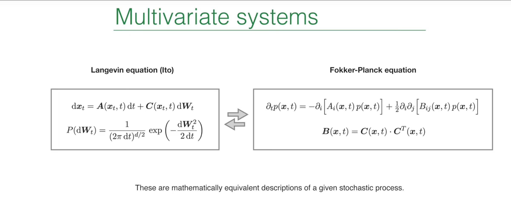

引言：理解随机运动的第三种视角¶
在之前的讲座中，Erwin Frey 教授已经探讨了两种描述随机过程的强大框架：朗之万方程 (Langevin equation) 和福克-普朗克方程 (Fokker-Planck equation)。朗之万方程从微观视角出发，追踪一个粒子在随机力的作用下所形成的单条、具体的、充满噪声的轨迹。而福克-普朗克方程则采用宏观的统计视角，描述了由无数个此类粒子组成的系综的概率密度如何随时间演化。这两种方法是等价的，但它们提供了看待同一问题的不同角度。

在第19讲中已经介绍了第三种框架：路径积分 (Path Integral)。路径积分方法最初由诺伯特·维纳 (Norbert Wiener) 在研究随机过程时提出，后由理查德·费曼 (Richard Feynman) 发展并应用于量子力学，成为现代物理学的基石之一。它提出了一种革命性的观点：要计算一个系统从一个初始状态演化到一个最终状态的概率，我们不应只关注最可能的那条路径，而应该考虑并"加和"系统可能经历的所有可能路径。
这个"对所有历史求和 (sum over histories)"的思想，为我们提供了一种连接朗之万方程的轨迹视角和福克-普朗克方程的概率密度视角的桥梁。每一条可能的路径都被赋予一个特定的"权重"，这个权重的大小反映了该路径出现的可能性。通过对所有路径的权重进行积分（一种在无穷维函数空间上的积分），我们便能得到系统总的转移概率。
这种方法不仅在概念上极为优雅，在计算上也异常强大。它将一个随机微分方程问题，转化为了一个类似于统计力学或量子场论中的泛函积分问题。这使得我们可以借鉴后者的许多成熟技术，如微扰理论和重整化群方法，来分析复杂的随机系统，尤其是那些由于乘性噪声 (multiplicative noise) 而难以直接求解的系统。这节课的核心，就是系统地推导并理解如何为含乘性噪声的随机过程构建路径积分。
1. 回顾：多变量系统的基础描述¶
在深入路径积分的推导之前，我们首先回顾一下上一节描述多变量随机系统的两个等价的数学框架。理解这两个出发点，对于构建连接它们的路径积分之桥至关重要。
1.1 朗之万方程 (伊藤形式)：粒子的微观视角¶
多变量系统的朗之万方程（在伊藤 (Ito) 诠释下）描述了系统状态向量 \(x_t\) 随时间的演化，其微分形式如下：
其中：
-
\(x_t\) 是一个 \(d\) 维向量，代表系统在时刻 \(t\) 的状态（例如，多个粒子的位置、速度等）。
-
\(A(x_t, t)\) 是漂移向量 (drift vector)，代表作用在系统上的确定性力或趋势。它描述了在没有噪声的情况下，系统的平均运动方向。
-
\(dW_t\) 是一个 \(d\) 维维纳过程（或布朗运动）的无穷小增量向量。它的每一个分量都是一个独立的、服从高斯分布的随机变量，其概率分布为： $$ P(dW_t) = \frac{1}{(2\pi dt)^{d/2}} \exp\left(-\frac{1}{2dt} dW_t^2\right) $$ 这意味着 \(dW_t\) 的均值为零，方差为 \(dt\)。
-
\(C(x_t, t)\) 是噪声矩阵 (noise matrix) 或扩散矩阵。它描述了随机力如何作用于系统的不同自由度。
这节课的焦点是乘性噪声，其数学特征在于噪声矩阵 \(C\) 依赖于系统的当前状态 \(x_t\)。这具有深刻的物理意义：随机扰动的强度或特性取决于系统所处的位置。例如，在金融模型中，股票价格的波动幅度通常与其自身价格成正比；在生物种群模型中，环境的随机波动对种群数量的影响也与种群大小有关。这种状态依赖的噪声使得系统的动力学行为远比加性噪声（\(C\) 为常数）更为复杂和丰富。
1.2 福克-普朗克方程：系综的宏观视角¶
与朗之万方程描述单条轨迹不同，福克-普朗克方程描述了大量相同系统组成的系综的概率密度函数 \(p(x, t)\) 如何随时间演化：
这个方程可以理解为一个在状态空间中的概率守恒方程：
-
第一项是漂移项，描述了概率分布的"中心"或峰值如何随着确定性的漂移场 \(A\) 运动。
-
第二项是扩散项，描述了概率分布如何随着时间逐渐展宽或弥散。
这两个描述之间存在一个至关重要的联系，即扩散张量 (diffusion tensor) \(B\) 与噪声矩阵 \(C\) 的关系：
这个关系式精确地编码了微观噪声的统计特性如何转化为宏观概率密度的扩散行为。矩阵乘积 \(C \cdot C^T\) 实质上计算了由 \(C\) 转换后的噪声的协方差矩阵。如果 \(C\) 是对角矩阵，意味着不同方向的噪声是相互独立的；如果 \(C\) 含有非对角元，则不同方向的随机"踢力"之间存在关联。扩散张量 \(B\) 完美地捕捉了这些关联，并决定了概率云在多维空间中扩散时的形状（例如，是圆形还是椭圆形）。因此，这个公式是连接微观（朗之万）和宏观（福克-普朗克）描述的关键.
2. 随机微分方程的路径积分推导¶
现在，我们将从朗之万方程出发，一步步构建出等价的路径积分表述。这个推导过程将展示路径积分是如何从离散的时间步中"生长"出来的。
2.1 从连续时间到离散步长：欧拉-丸山格式¶
我们无法直接处理连续时间的随机微分方程，因此第一步是将其离散化。我们将总时间 \(T\) 分割成 \(N\) 个微小的时间步长 \(\Delta t = T/N\)。对于任意一个时间步，从 \(t_i\) 到 \(t_{i+1}\)，朗之万方程可以近似写为：
这里，\(\Delta W_{i+1} = W(t_{i+1}) - W(t_i)\) 是一个服从均值为0、协方差矩阵为 \(I \Delta t\) 的高斯随机向量。这种离散化方法被称为欧拉-丸山 (Euler-Maruyama) 方法 。
欧拉-丸山（Euler-Maruyama）方法是一种用于数值求解随机微分方程（SDE）的经典算法，其发展源于18世纪欧拉提出的常微分方程（ODE）数值解法——欧拉法。欧拉法通过离散化时间步长并利用向前差商近似导数，为确定性系统的数值计算奠定了基础。20世纪50年代，日本数学家丸山仪四郎将其推广至随机微分方程领域，提出了欧拉-丸山方法，通过引入随机项（如布朗运动增量）模拟系统的随机性演化。该方法的物理本质在于，它将确定性动力学与随机扰动相结合，通过迭代公式逐步逼近SDE的解，适用于描述受噪声影响的动态系统。其应用广泛，包括金融领域的期权定价（如几何布朗运动模型）、物理学中的布朗运动模拟、生物医学中的随机过程建模，以及机器学习中的扩散模型采样（如图像生成）。尽管欧拉-丸山方法具有计算简单、易于实现的优点，但其收敛阶较低且对步长敏感，通常用于低精度需求或复杂系统初步分析。
一个至关重要的细节是，漂移项 \(A\) 和噪声矩阵 \(C\) 都是在时间步的起始点 \(x_i\) 进行取值的。这种"非预见性 (non-anticipating)"的取值方式，是伊藤积分的核心特征。正是这个在推导之初就做出的选择，决定了我们最终得到的将是与伊藤诠释相对应的路径积分。如果选择在时间步的中点取值，则会导向另一种随机微积分——斯特拉托诺维奇 (Stratonovich) 积分，我们将在课程的末尾讨论其区别。
2.2 短时传播子：单步转移概率¶
现在我们来计算系统在单个时间步内，从状态 \(x_i\) 转移到 \(x_{i+1}\) 的条件概率，即短时传播子 \(P(x_{i+1} | x_i)\)。
从离散化的朗之万方程可以看出，由于 \(\Delta W_{i+1}\) 是高斯随机变量，那么位移 \(x_{i+1} - x_i\) 也服从高斯分布。我们可以计算出这个分布的均值和协方差：
-
**均值 (Mean): $$ \mu_i = x_i + A(x_i) \Delta t $$
-
协方差矩阵 (Covariance Matrix): $$ \langle (C(x_i) \Delta W_{i+1})(C(x_i) \Delta W_{i+1})^T \rangle = C(x_i) \langle \Delta W_{i+1} \Delta W_{i+1}^T \rangle C(x_i)^T = C(x_i) (I \Delta t) C(x_i)^T = B(x_i) \Delta t $$
因此，单步转移概率是一个多维高斯分布：
这个表达式虽然精确，但在指数项中出现的矩阵逆 \(\mathbf{B}^{-1}\) 会给后续的计算带来很大麻烦。我们的下一步就是利用数学技巧来消除它。
2.3 引入响应场：傅里叶空间方法¶
为了处理指数项中的矩阵逆，我们采用一个非常强大的数学工具：高斯积分的傅里叶表示。任何一个高斯函数都可以表示为其傅里叶变换的积分形式。利用下面的高斯积分恒等式：
将这个恒等式应用于我们的短时传播子，令 \(\vec{v} = \vec{x}_{i+1} - \vec{\mu}_i\) 和 \(\mathbf{M} = \mathbf{B}(\vec{x}_i)\Delta t\)，我们可以将 \(P(\vec{x}_{i+1} | \vec{x}_i)\) 重写为一个对辅助变量 \(\vec{q}\) 的积分：
这个变换是整个推导的关键一步。我们引入了一个新的积分变量 \(\vec{q}\)，它在物理上被称为响应场 (response field)。通过这个变换，我们成功地将原来指数项中复杂的矩阵逆 \(\mathbf{B}^{-1}\) 替换成了一个简单的二次型 \(\vec{q}^T \mathbf{B} \vec{q}\)，这为我们将许多时间步串联起来铺平了道路。
2.4 组装路径：从步长到轨迹¶
一条完整的路径是从初始状态 \(x_0\) 在 \(t_0\) 时刻，经过一系列中间状态 \(x_1, \ldots, x_{N-1}\)，最终到达末态 \(x_N\) 在 \(t_N\) 时刻的演化过程。其总的转移概率可以通过马尔可夫链的性质，将所有单步转移概率相乘，并对所有可能的中间状态进行积分得到（查普曼-科尔莫戈罗夫方程 Chapman-Kolmogorov equation）：
现在，我们将每一步的传播子 \(P(x_{i+1} | x_i)\) 都用其傅里叶表示代入：
其中 \(x_f = x_N\)。这个表达式看起来很复杂，但它已经具备了路径积分的雏形：我们对所有中间时刻的位置 \(\vec{x}_i\) 和所有辅助场 \(\vec{q}_j\) 进行积分。
2.5 连续极限与 MSRJD 作用量¶
最后一步是取连续极限，即让时间步数 \(N \to \infty\)，时间步长 \(\Delta t \to 0\)。在这个极限下：
-
离散的求和 \(\sum_{k=1}^N \Delta t (\ldots)\) 变成了时间的积分 \(\int_{t_0}^{t_f} dt (\ldots)\)。
-
差分 \((x_k - x_{k-1}) / \Delta t\) 变成了时间导数 \(\partial_t x\)。
-
对所有离散变量 \(x_i\) 和 \(q_j\) 的无穷乘积积分，被形式上记为泛函积分 (functional integral) 或路径积分，记作 \(\int \mathcal{D}[x] \mathcal{D}[q]\)。
经过整理，我们得到最终的路径积分表达式：
其中，指数上的 \(S\) 被称为作用量 (action)，其具体形式为：
这个作用量在非平衡统计物理中被称为马丁-西吉亚-罗斯-詹森-德多米尼西斯 (Martin-Siggia-Rose-Janssen-De Dominicis, MSRJD) 作用量，我们在第19讲简要提过。它完美地将一个随机微分方程问题，重新表述为了一个场论问题。
3. 路径积分作用量的物理解释¶
我们已经从数学上推导出了 MSRJD 作用量，现在需要深入理解其每一项的物理意义。
3.1 "漂移"项：强制施加动力学规则¶
作用量的第一项是 \(i\vec{q}^T(\partial_t \vec{x} - \vec{A}(\vec{x}))\)。在泛函积分中，对响应场 \(\vec{q}(t)\) 在所有函数空间上进行积分，其作用类似于一个拉格朗日乘子。这个积分会产生一个泛函德尔塔函数 (functional delta function)：
这个德尔塔函数是一个"硬约束"，它强制要求在路径积分中所有被求和的路径 \(x(t)\) 都必须（在没有噪声时）满足确定性部分的动力学方程 \(\partial_t x = A(x)\)。因此，这一项的作用就是将系统的确定性演化规则"嵌入"到路径积分的框架中。
3.2 "噪声响应场"项：编码涨落的统计特性¶
作用量的第二项是 \(\frac{1}{2} (iq)^T \mathbf{B}(x) (iq)\)。这一项是响应场 \(i\vec{q}\) 的二次型。它的形式与一个均值为零、协方差矩阵为 \(\mathbf{B}(\vec{x})\) 的高斯分布的指数部分完全相同。
因此，这一项的物理意义是编码了系统所受噪声的全部统计信息——它的方差和不同分量之间的关联都包含在扩散张量 \(\mathbf{B}(x)\) 中。响应场 \(q\) 之所以得名，是因为在更高等的应用中，可以通过对作用量加上一个与 \(q\) 耦合的源项，然后对源项求泛函导数，来计算系统对外部微小扰动的线性响应函数。
将随机过程重写为路径积分，实际上是将其转化为一个（0+1）维的场论（只有时间维，没有空间维）。在这个理论中，系统的状态 \(x(t)\) 和响应场 \(q(t)\) 成为了动力学"场"变量。这个视角极为强大，因为它允许我们将量子场论中发展出的强大工具（如费曼图、微扰理论、重整化群等）"移植"过来，用于分析经典随机过程，这对于研究相变、临界现象等复杂问题尤其有效。
4. 另一种视角：启发式推导¶
除了上述从离散化出发的严格推导，我们还可以通过一种更物理、更启发式的方法得到相同的作用量。这个方法能帮助我们更直观地理解响应场 \(q\) 的来源和意义。
1.从显式噪声出发：我们将朗之万方程写成包含一个标准高斯白噪声源 \(\eta(t)\) 的形式：
其中 \(\langle \eta_i(t) \eta_j(t') \rangle = \delta_{ij} \delta(t - t')\)。所有噪声路径 \(\eta(t)\) 出现的概率由一个高斯权重决定：\(\mathcal{P}[\eta] \sim \exp(-\frac{1}{2} \int dt\, \eta^2)\)。
2.对噪声进行平均：任何一个可观测量 \(\sigma(x)\) 的期望值，都可以通过先固定一条噪声路径 \(\eta(t)\) 求解出对应的轨迹 \(x(t)\)，计算 \(\sigma(x)\)，然后再对所有可能的噪声路径进行加权平均得到：
3.用德尔塔函数施加约束：为了在同一个积分中处理 \(x\) 和 \(\eta\)，我们用一个泛函德尔塔函数来强制要求 \(x(t)\) 必须是给定 \(\eta(t)\) 的解：
4.德尔塔函数的傅里叶表示：接下来，我们将德尔塔函数写成它的傅里叶积分形式，这便自然地引入了响应场 \(q\)：
5.对噪声积分：将此表达式代回，现在的积分涉及 \(x, \eta, q\)。我们可以先对物理噪声 \(\eta(t)\) 进行积分。关于 \(\eta\) 的积分是一个标准的高斯积分，因为它在指数项中只出现了二次项（来自 \(\mathcal{P}[\eta]\)）和线性项（来自与 \(q\) 的耦合）。通过"配方法"完成这个高斯积分，我们得到：
将这个结果与指数中剩下的项组合起来，我们就得到了只依赖于 \(x\) 和 \(q\) 的路径积分，其作用量与我们之前严格推导得到的结果完全一致。
这个启发式推导清晰地揭示了响应场 \(q\) 的物理本质：它是动力学约束 \((\partial_t x - A - C\eta)\) 的傅里叶共轭场。它诞生于"运动方程必须被遵守"这一物理要求的数学表达。随后，通过对物理噪声 \(\eta\) 的积分，噪声的统计特性被"转移"到了作用量中关于 \(q\) 的二次项上。从这个意义上说，作用量中的响应场部分，可以看作是那个被积分掉的物理噪声所留下的"幽灵"。
5. 模拟与可视化：Python中的几何布朗运动¶
理论推导是抽象的，通过数值模拟可以直观地感受乘性噪声的独特效应。我们将以一个典型的乘性噪声系统——几何布朗运动 (Geometric Brownian Motion, GBM) 为例进行演示。
5.1 乘性噪声的典型范例：几何布朗运动¶
几何布朗运动的随机微分方程 (SDE) 如下：
其中 \(\mu\) 是漂移率，\(\sigma\) 是波动率。这是一个完美的乘性噪声例子，因为无论是确定性的漂移项 \(\mu X_t dt\) 还是随机的扩散项 \(\sigma X_t dW_t\)，其大小都与系统当前的状态 \(X_t\) 成正比。
这种模型在许多领域都有广泛应用，例如在金融学中，它被用来为股票价格建模（价格越高，波动的绝对值也越大，且价格不会为负）；在生物学中，它可以描述在资源无限环境下的种群增长，其增长和波动都与现有种群规模成比例。
5.2 使用欧拉-丸山方法的Python实现¶
我们将使用之前讨论过的欧拉-丸山方法来实现GBM的数值模拟。其离散形式为：
其中 \(Z_n\) 是从标准正态分布（均值为0，方差为1）中抽取的随机数。
下面是实现该模拟的完整Python代码：
import numpy as np
import matplotlib.pyplot as plt
def simulate_gbm(x0, mu, sigma, T, dt, num_paths):
"""
Simulate Geometric Brownian Motion (GBM) using the Euler-Maruyama method.
Parameters:
x0 : float
Initial value.
mu : float
Drift rate.
sigma : float
Volatility.
T : float
Total time.
dt : float
Time step.
num_paths : int
Number of paths to simulate.
Returns:
t : numpy.ndarray
Array of time points.
X : numpy.ndarray
Simulated GBM paths, shape (num_steps, num_paths).
"""
num_steps = int(T / dt)
t = np.linspace(0, T, num_steps + 1)
# Create an array to store paths
X = np.zeros((num_steps + 1, num_paths))
X[0, :] = x0
# Generate random numbers for all time steps
# Z is an array of shape (num_steps, num_paths), each element follows N(0, 1)
Z = np.random.standard_normal((num_steps, num_paths))
# Iteratively compute each step
for i in range(num_steps):
# dW = sqrt(dt) * Z
dW = np.sqrt(dt) * Z[i]
# Euler-Maruyama step
X[i+1] = X[i] + mu * X[i] * dt + sigma * X[i] * dW
return t, X
# --- Simulation parameters ---
x0 = 100.0 # Initial price
mu = 0.05 # Annualized drift (5%)
sigma = 0.2 # Annualized volatility (20%)
T = 1.0 # Total time (1 year)
dt = 0.004 # Time step (approximately one trading day)
num_paths = 50 # Number of paths to simulate
# --- Run simulation ---
t, X = simulate_gbm(x0, mu, sigma, T, dt, num_paths)
# --- Visualization of results ---
plt.style.use('seaborn-v0_8-whitegrid')
fig, ax = plt.subplots(figsize=(10, 6))
ax.plot(t, X)
ax.set_title(f'{num_paths} Geometric Brownian Motion Simulation Paths', fontsize=16)
ax.set_xlabel('Time (years)', fontsize=12)
ax.set_ylabel('Price', fontsize=12)
ax.axhline(y=x0, color='r', linestyle='--', label=f'Initial Price = {x0}')
ax.legend()
plt.show()

从同一点出发的50条GBM路径，最显著的特征是所有轨迹呈现出一种"扇形展开" (fanning out) 的形态。这正是乘性噪声最直观的体现：
-
当一条轨迹由于随机波动碰巧走到了较高的值，其状态 \(X_t\) 变大。
-
由于噪声项 \(\sigma X_t dW_t\) 与 \(X_t\) 成正比，一个更大的 \(X_t\) 会导致一个更大的随机波动幅度。
-
这反过来又使得轨迹更容易出现剧烈的向上或向下跳跃，从而进一步拉开与其他轨迹的距离。
相比之下，对于加性噪声（如标准的布朗运动），噪声强度是恒定的，所有轨迹的弥散程度在统计上是均匀的，会形成一个对称扩展的分布。而几何布朗运动的乘性噪声则导致了一个随着时间越来越宽，并且向右偏斜（长尾）的非对称分布。
结论¶
这节课系统地建立了含乘性噪声随机过程的路径积分表述。通过从离散化的朗之万方程出发，我们推导出了MSRJD作用量，并深入探讨了其各项的物理意义。路径积分不仅提供了一种全新的理论视角，还将随机过程与统计场论联系起来，为解决复杂问题提供了强大的计算工具。
最后，我们再次回到上节课讨论过的：伊藤 (Ito) 积分与斯特拉托诺维奇 (Stratonovich) 积分的微妙区别。这个区别只在乘性噪声的情况下才会出现，对于加性噪声，两者是完全等价的。关键在于，在处理任何一个乘性噪声问题时，必须明确自己使用的是哪一种约定，并在整个计算过程中保持一致。路径积分的推导过程，就清晰地展示了伊藤约定是如何在第一步离散化时就被选定的。